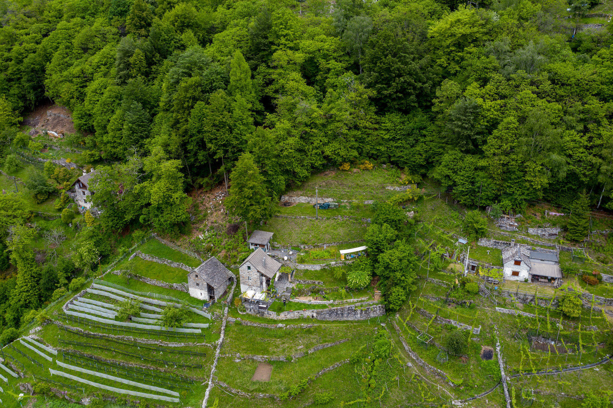
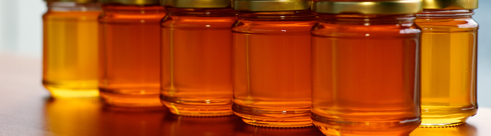
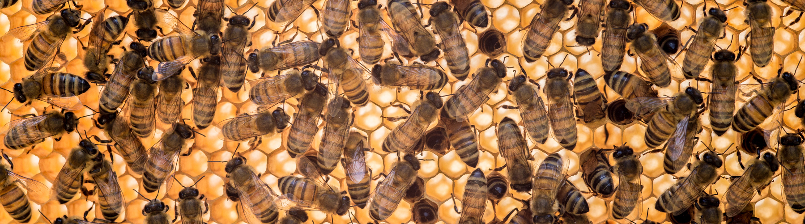

Il miele 2020 prodotto dalle api che accudisco in quel di Mergoscia è risultato di qualità.
Le arnie da cui ho raccolto il miele 2020 sono 3 sulle 5 esistenti (1 è sperimentale e l’altra abitata da un popolo creato in primavera 20202)
Luogo di produzione a 800 m/slm

Nel 2020 è stato prodotto miele di 1’000 fiori con reminiscenze di tiglio e prevalenza di castagno.
Analisi pollinica

Attualmente è in corso l’analisi pollinica del miele 2020, analisi che sarà pubblicata appena disponibile.
Nel 2016 è stata effettuata dalla Fondazione Fojanini di studi superiori di Sondrio (laboratorio apistico) un’analisi pollinica del miele di Mergoscia coi seguenti risultati:
Polline dominante castagno (95%).
Analisi organolettica: “…il castagno è percepibile all’assaggio, ma non intensamente; si avverte invece immediatamente una decisa nota fruttata/caramellata e fresca/balsamica attribuibile ai nettari di sorbo, rovo/lampone, tiglio e acero. Dando quindi un giusto peso alle percentuali osservate, e tenendo conto dell’analisi organolettica, si può concludere che il prodotto è costituito da una base di nettari di Rosacee (sorbo, lampone, rovo) uniti a quelli di tiglio, acero, castagno, alla quale si aggiunge una miriade di altri piccolissimi contributi da parte delle specie classificate tra i pollini rari (legate perciò a minimi apporti di nettare, ma che nel loro insieme concorrono alla definizione del profumo e dell’aroma): ciliegio, timo, erica, mirtillo, agrifoglio, sedo, vitalba, erba viperina, buddleia, ginestra, ranuncoli, anemone, aquilegia, linaria, galega, corniolo e biancospino.”
Per il dettaglio, scaricare il documento in .pdf.
Miele da vendere

Costo del barattolo da 500 gr: fr 12.-
Per comande, scrivere a miele@mbeo.ch (minimo 5 barattoli).